Merchandise & Inventory Sales Analysis
Product Performance & Sales Patterns
Comprehensive analysis of merchandise sales patterns across size, condition, color, category, and brand dimensions in the circular fashion marketplace.
Project Overview
Business Context
This analysis examines the sell-side of the marketplace - which products members are purchasing with their points and cash. Understanding merchandise performance patterns is critical for optimizing inventory acquisition strategies, point valuation algorithms, and member satisfaction.
Key Dimensions Analyzed
- Size distribution: Which sizes sell best and generate highest revenue
- Condition performance: How item condition impacts sales and pricing
- Color preferences: Member color choices and seasonal variations
- Category hierarchy: Top-performing product categories and subcategories
- Brand positioning: Premium vs. mid-market brand performance
All-Time Performance Baseline
Total Sales by Size (All-Time)
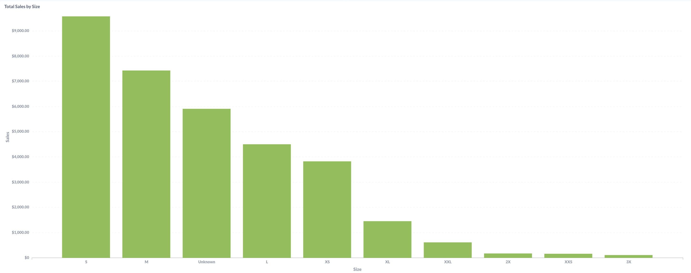
Total Items Sold by Size (All-Time)
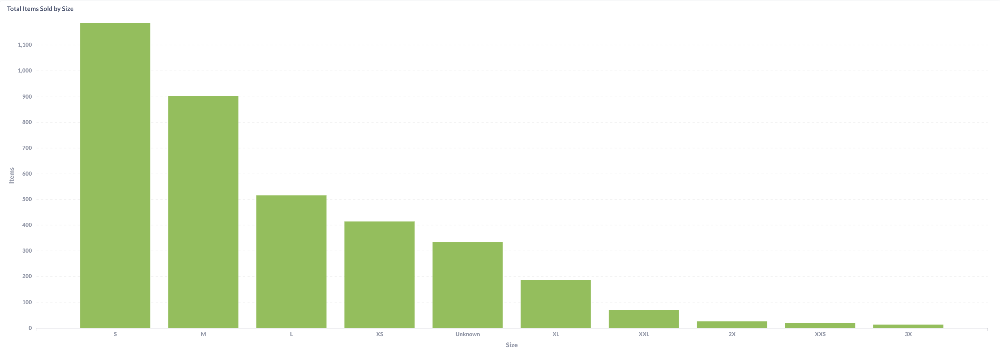
Total Sales by Condition (All-Time)
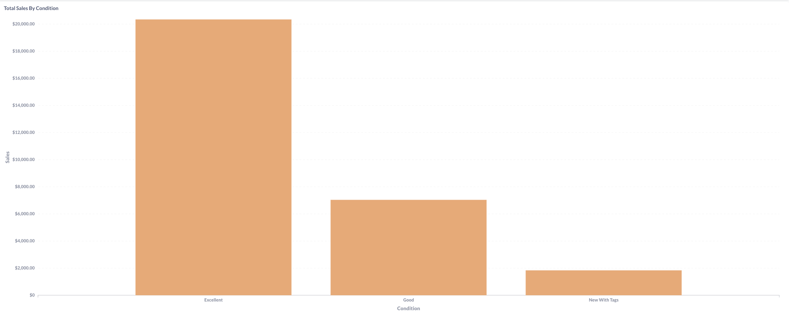
Total Items Sold by Condition (All-Time)
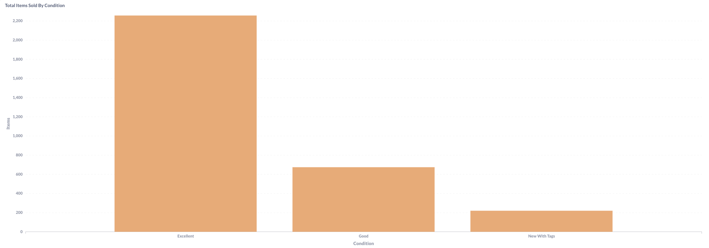
Lifetime Performance Patterns:
Size analysis reveals S and M dominating both revenue ($9,000+ and $7,000+ respectively) and volume (1,100+ and 900+ items), representing the platform’s core demographic. The “Unknown” category ($6,000 revenue, 300+ items) represents bags and accessories, demonstrating strong demand for size-agnostic products. Larger sizes (XL+) show dramatically lower performance, indicating either limited supply or reduced demand.
Condition analysis shows Excellent condition driving the marketplace with $20,000+ lifetime revenue and 2,200+ items sold - nearly 3x the performance of Good condition ($6,000 revenue, 600 items). New With Tags shows surprisingly limited performance ($1,000 revenue, 100 items), suggesting members primarily participate in the used clothing circular economy rather than seeking new items.
Strategic Baseline Insights:
- Core demographic: S and M sizes represent 60%+ of marketplace activity
- Quality preference: Excellent condition commands 3x premium over Good condition
- Accessory opportunity: Size-agnostic items perform strongly despite lower volume
- Limited new item demand: Members prefer authentic secondhand over new inventory
Size Performance Analysis (Last 3 Months)
Monthly Size Sales (July-September 2025)
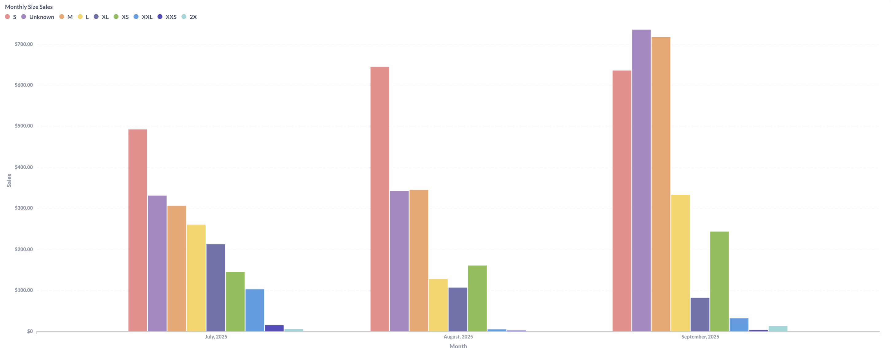
Monthly Size Items Sold (July-September 2025)
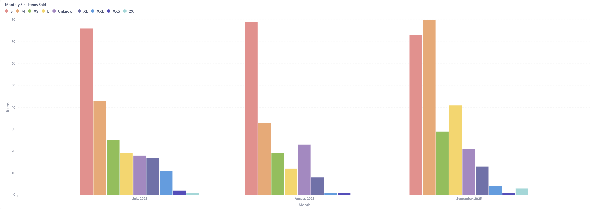
Recent Size Trends:
Three-month analysis shows S size maintaining revenue leadership ($450-700 range) with consistent volume (75-80 items monthly), while M size demonstrates strong stability ($300-700 revenue, 40-80 items). September shows dramatic S size surge to $700+ revenue, suggesting seasonal restocking or promotional campaign impact.
Unknown (accessories) category shows increasing prominence, reaching $300 revenue and 30 items in September, indicating growing member interest in bags and size-agnostic products. XL and larger sizes remain minimal performers (sub-$100 monthly), confirming supply or demand constraints in extended sizing.
Size Strategy Insights:
- S size dominance increasing: September surge suggests accelerating small-size preference
- M size stability: Consistent mid-tier performance provides reliable revenue baseline
- Accessories growth: Unknown category trending upward throughout 3-month period
- Extended size gap: XL+ sizes represent inventory acquisition opportunity or demographic mismatch
Condition Performance Analysis (Last 3 Months)
Monthly Condition Sales (July-September 2025)
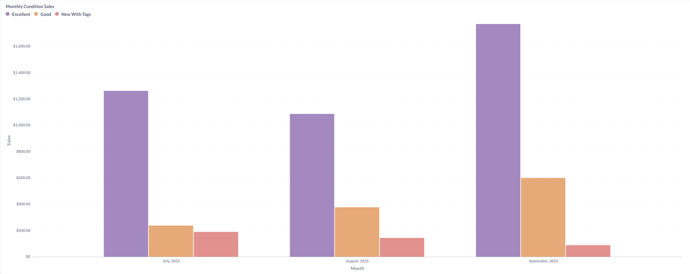
Monthly Condition Items Sold (July-September 2025)
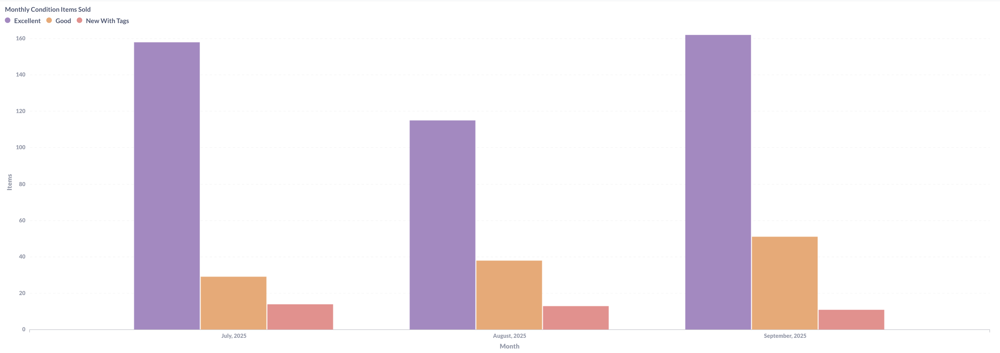
Condition Performance Trends:
Excellent condition demonstrates remarkable consistency, generating $1,000-1,600 monthly revenue with 110-160 items sold - representing 70-80% of total marketplace activity. Good condition maintains modest but steady performance ($200-500 revenue, 20-50 items), while New With Tags shows minimal impact ($100-150 revenue, 10-15 items).
September shows peak Excellent condition performance ($1,600 revenue, 160 items), correlating with overall marketplace activity surge. The dramatic gap between Excellent and Good condition sales suggests either point pricing differentials or genuine member quality preferences driving purchasing decisions.
Condition Strategy Insights:
- Quality drives marketplace: Excellent condition represents 75%+ of revenue consistently
- Good condition niche: Lower pricing but steady demand for budget-conscious members
- New item limited appeal: Members primarily seek authentic secondhand experience
- Consistent patterns: Condition preferences remain stable across 3-month period
Color Performance Analysis (Last 3 Months)
Monthly Color Sales (July-September 2025)
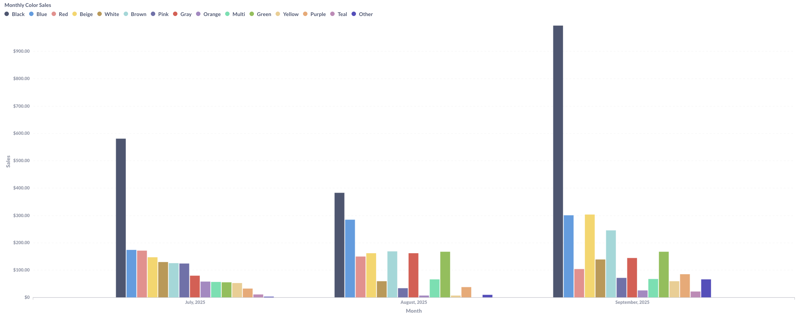
Monthly Color Items Sold (July-September 2025)
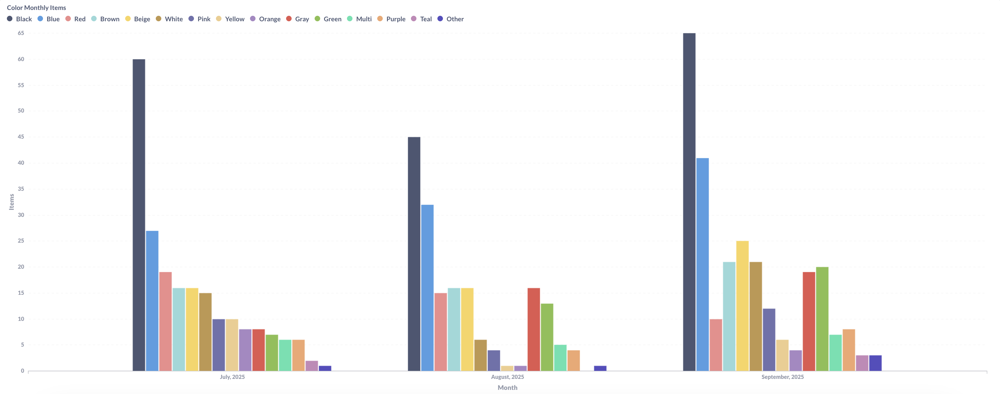
Top 20 Colors by Revenue and Volume
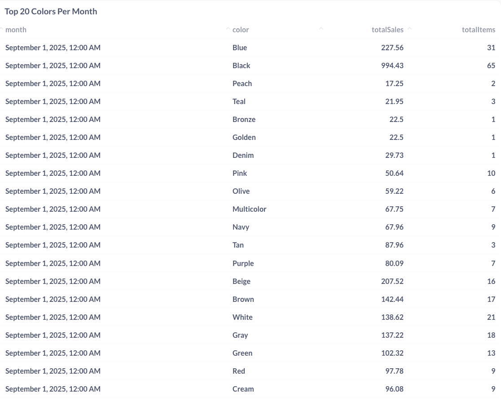
Color Preference Patterns:
Black demonstrates overwhelming dominance, generating $600-1,000 monthly revenue with 60-65 items sold in September alone. Blue maintains strong secondary position ($200-300 revenue, 25-40 items), while neutrals (Beige, White, Gray, Brown) show consistent mid-tier performance ($100-200 each).
The Top 20 Colors table reveals Black’s exceptional September performance ($994 revenue, 65 items), followed by Blue ($227, 31 items) and Beige ($207, 16 items). Specialty colors like Peach, Teal, and Bronze show minimal presence (1-3 items), suggesting limited inventory or niche appeal.
Color Strategy Insights:
- Black universality: 40-50% of color-based sales consistently
- Neutral palette dominance: Black, Blue, Beige, White, Gray represent 70%+ of revenue
- Seasonal stability: Color preferences show minimal variation across summer months
- Specialty color challenges: Bright and unusual colors struggle for marketplace traction
Category Performance Analysis (Last 3 Months)
Monthly Items Sold by Category (July-September 2025)
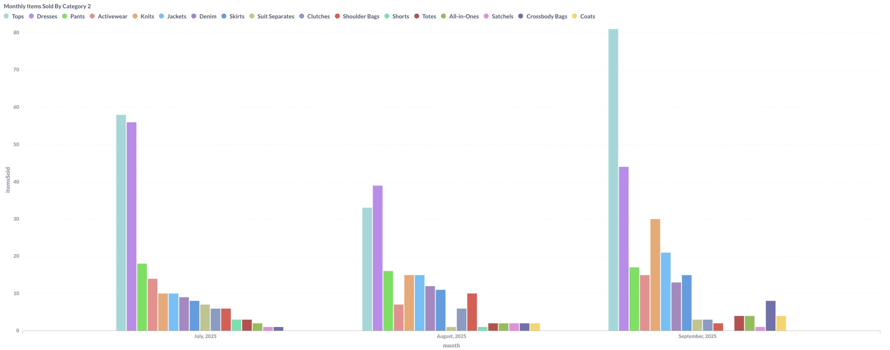
Monthly Sales by Category (July-September 2025)
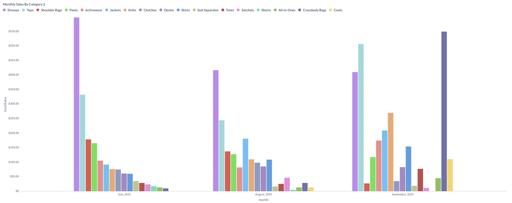
Top Categories Performance Comparison
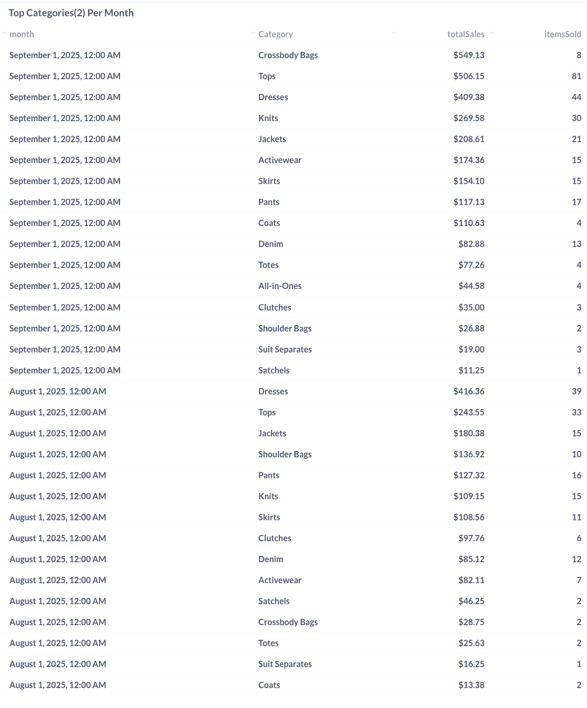
Category Performance Dynamics:
Tops category leads volume with 80+ items sold in September generating $506 revenue, while Dresses command higher per-item values ($409 revenue, 44 items). Crossbody Bags emerge as surprise revenue leader in September ($549 revenue, 8 items), demonstrating exceptional per-item pricing power.
The category table reveals evolving preferences: September shows Crossbody Bags, Tops, and Dresses as top three revenue generators, while August favored Dresses, Tops, and Shoulder Bags. Knits ($269, 30 items) and Jackets ($208, 21 items) maintain consistent mid-tier performance.
Lower-performing categories include Suit Separates ($19, 3 items), Satchels ($11, 1 item), and various specialty items, suggesting either limited inventory or reduced member interest.
Category Strategy Insights:
- Accessories premium pricing: Bags command highest per-item revenue despite lower volume
- Tops volume leader: Consistent 60-80 item monthly sales provide inventory velocity
- Dresses balance: Strong performance in both revenue and volume metrics
- Outerwear opportunity: Jackets and Coats show modest but steady demand
Brand Performance Analysis (Last 3 Months)
Top 12 Brand Sales Trends (July-September 2025)
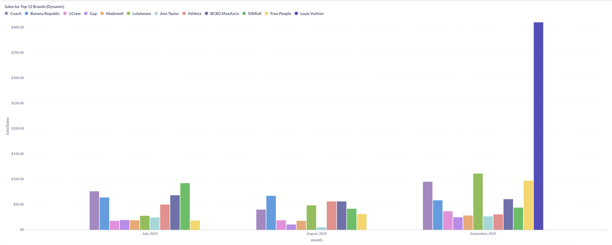
Recent Transaction by Brand
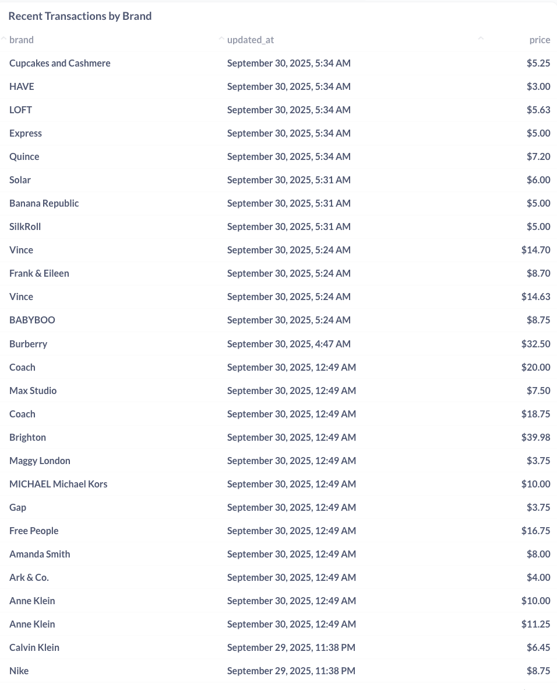
Brand Positioning Patterns:
Top 12 brand analysis reveals Coach leading September with $410+ revenue from luxury positioning, while mass-market brands (Lululemon, Free People, SilkRoll) show $100-150 monthly performance. Louis Vuitton’s presence ($410 single transaction) demonstrates occasional luxury item movement.
Recent transactions table displays pricing hierarchy: luxury brands (Louis Vuitton $410, Burberry $32, Coach $20) command premium positioning, while contemporary brands (Vince $14, Free People $16) occupy mid-market, and fast-fashion brands (Gap $3, Express $5, H&M $3) represent value tier.
Mid-tier consistency appears across J.Crew, Athleta, Banana Republic, and Ann Taylor ($20-50 price points), suggesting these brands balance desirability with accessibility in the point economy.
Brand Strategy Insights:
- Luxury limited frequency: High-value brands appear sporadically but drive substantial revenue
- Contemporary consistency: $10-20 brands provide reliable marketplace activity
- Athletic brand strength: Lululemon, Athleta show strong member demand
- Fast-fashion volume: Low-price brands drive item count but minimal revenue impact
Strategic Business Recommendations
Inventory Acquisition Priorities:
- Size focus: Prioritize S and M size acceptance in kit processing (60%+ of demand)
- Quality standards: Maintain strict Excellent condition criteria given 75%+ revenue concentration
- Color guidance: Encourage members to consign Black, Blue, and neutral-toned items
- Category targeting: Focus on Tops, Dresses, and premium accessories for optimal turnover
Point Valuation Optimization:
- Condition premiums: Validate current Excellent vs Good pricing differential (3x gap justified)
- Size adjustments: Consider modest S/M size premiums given demand concentration
- Color neutrality: Avoid color-based pricing given Black’s dominance may reflect inventory mix
- Category differentiation: Premium pricing for accessories justified by per-item revenue performance
Supply-Side Messaging:
- Member education: Communicate high-demand categories and sizes during kit submission
- Quality incentives: Emphasize Excellent condition point bonuses to encourage quality consignments
- Seasonal planning: Time acquisition campaigns around identified performance peaks
- Brand guidance: Highlight contemporary and athletic brands with consistent marketplace demand
Marketplace Health Monitoring:
- Size diversity: Address XL+ size gap through targeted acquisition or demographic expansion
- Condition balance: Monitor Excellent condition inventory levels to prevent stockouts
- Color variety: Ensure neutral color availability while accepting specialty colors for variety
- Category rotation: Maintain diverse category mix despite Tops/Dresses dominance
Technical Implementation
Data Engineering:
- Multi-dimensional analysis: Size, condition, color, category, brand tracking across sales transactions
- Time-series aggregation: Monthly, quarterly, and lifetime performance calculations
- Revenue attribution: Point value conversion and pricing tier analysis
- Inventory correlation: Sales performance tracking against kit submission patterns
Key Calculations:
- Size distribution metrics: Revenue and volume concentration by size category
- Condition performance ratios: Excellent vs Good vs New pricing and turnover analysis
- Color preference indexing: Seasonal and demographic color pattern identification
- Brand positioning analysis: Luxury vs contemporary vs value tier performance tracking
Results & Impact
Merchandise Intelligence:
- Identified core demographics: S and M sizes represent 60%+ of marketplace demand
- Validated quality focus: Excellent condition drives 75%+ of revenue consistently
- Quantified color preferences: Black and neutrals dominate with 70%+ concentration
- Category hierarchy established: Tops volume + Accessories premium pricing model confirmed
Strategic Outcomes:
- Inventory acquisition framework: Data-driven guidance for kit acceptance priorities
- Point valuation validation: Current pricing differentials supported by performance data
- Member communication strategy: Evidence-based messaging for consignment guidance
- Supply-demand balance: Clear gaps identified in extended sizing and specialty categories
Business Impact:
- Revenue optimization roadmap: Focus resources on highest-performing attributes
- Inventory health metrics: Baseline established for ongoing supply-side monitoring
- Member satisfaction insights: Quality and variety preferences inform acceptance standards
- Marketplace positioning: Brand and category performance guides competitive strategy
This merchandise analysis system provides critical sell-side intelligence for optimizing inventory acquisition, point valuation, and marketplace health in the circular fashion platform.